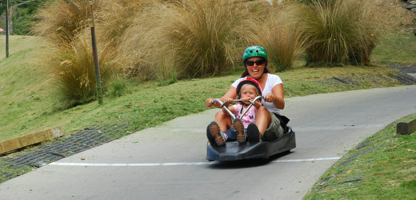
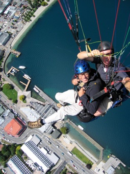
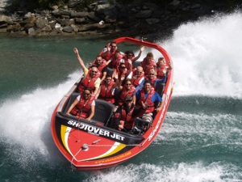

Queenstown

“Farvel skat, jeg flyver ned”
torsdag den 31. januar 2008

Så er vi kommet fra asken til ilden. Verdens mekka for ekstreme sportsgrene : Queenstown. Vi har fundet en lille campingplads tæt på centrum. Her er til gengæld dobbelt så dyrt som resten af pladserne, vi har boet på.
Byen er fyldt med mennesker, og faldskærmene daler ned om ørene på os. Nu skal vi bare vælge... Ingen af os tænder for alvor på bungyjump. Jeg har prøvet det en gang, hvilket var rigeligt. Så er der faldskærm, jetboat, en kæmpegynge, rafting og en masse andre ting. Priserne er meget høje, da der er rigelig med kunder til alle.

Vi starter stille og roligt ud med at tage en gondol til toppen af bjerget for at skaffe os lidt overblik. På toppen kører vi videre op med stolelift og derfra er det 800 meter ned i en lille gokart lignende vogn, kaldet en “Luge”. Pigerne sidder mellem benene på os, og så er det bare om at slippe bremsen. Det tænder virkelig barnet i os, så vi må lige have en ekstra tur. Så er der kort frokost med smuk udsigt til klipperne og byen.
Tim vælger at flyve ned i faldskærm, mens jeg tager liften med pigerne. I bunden møder vi helt tilfældigt nogle rigtig søde danske par fra Kalundborg, som vi sejlede sammen med på Doubtful Sound. De kender Tim’s fars orkester Eagle Band, ja igen er verden ikke så stor. Vi møder Tim ved skolens idrætsplads hvor alle paragliderne lander.

Stella skal sove, og imens tager jeg til Shotover floden for at sejle i jetbåd. Det er opfinderen af jetbåden, der står bag, så her må være valuta for pengene. Jeg får snuppet den forreste plads sammen med føreren, uden helt at vide ,hvad jeg går ind til. Inden vi for alvor når ud på floden, kommer der en anden båd og sprøjter vand ud over os, så jeg starter turen fuldstændig gennemblødt. Så går det ellers afsted ned ad de smalle floder, på lavt vand, meget tæt på klipperne, og med nogle halsbrækkende 360’ere, hvor jeg må klamre mig til båden. Det er længe siden, jeg har prøvet nogle vilde ting, så jeg nyder turen i fulde drag, mens vi suser afsted. Apropos adrenalin aktiviteter: man synes, man er lidt ung og vild, men mange på turen er +60, og har en fantastisk oplevelse.
Efter turen kommer jeg drivende våd hjem til Tim og pigerne. Vi hygger, og går aftentur til byen. Dagen efter står der ridning på programmet.
/Camilla
Her er så vores første extreme sport oplevelse i Queenstown, og så endda en børnevenlig en af slagsen.